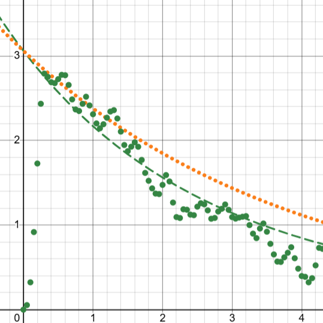
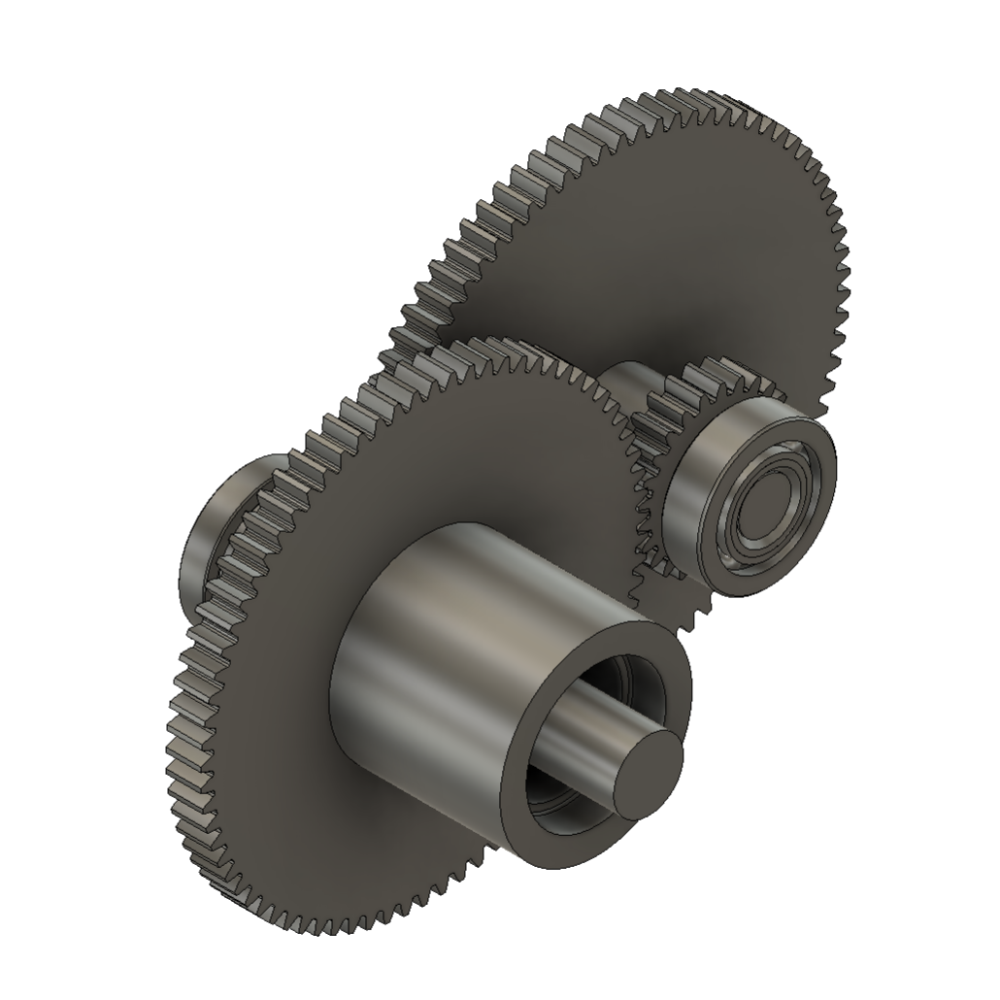
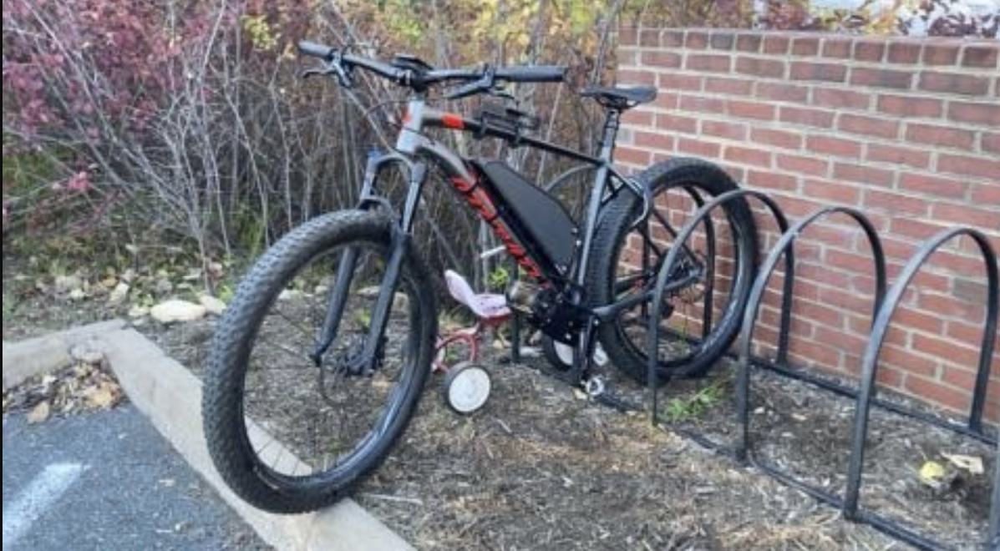
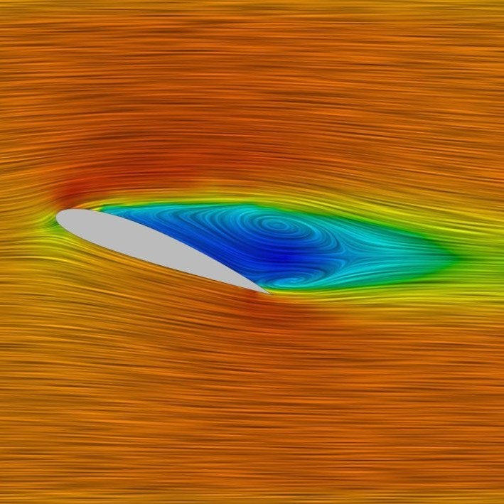
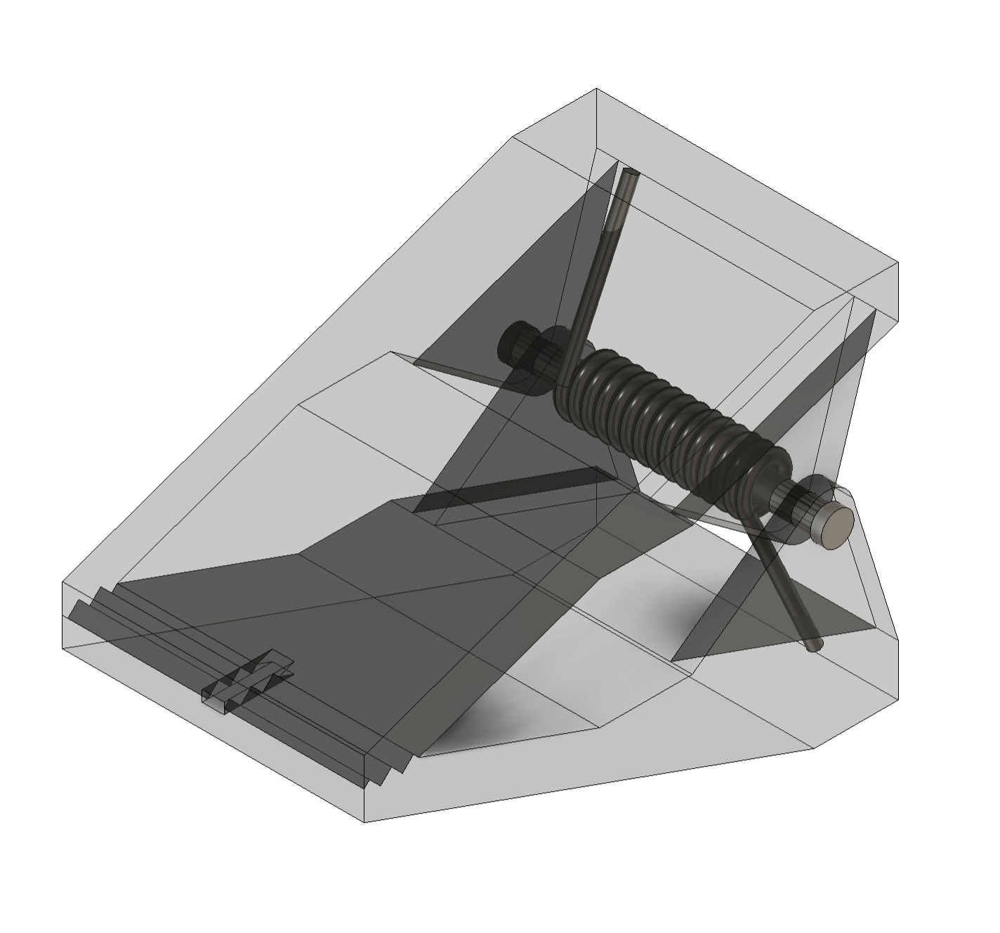
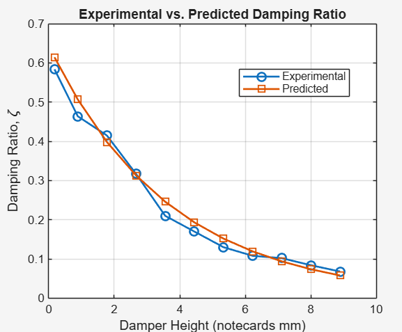
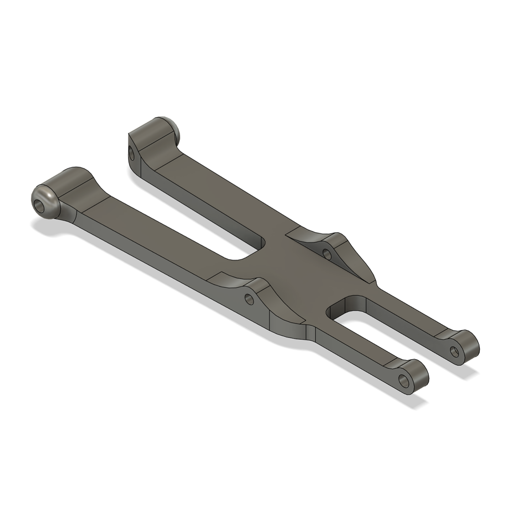
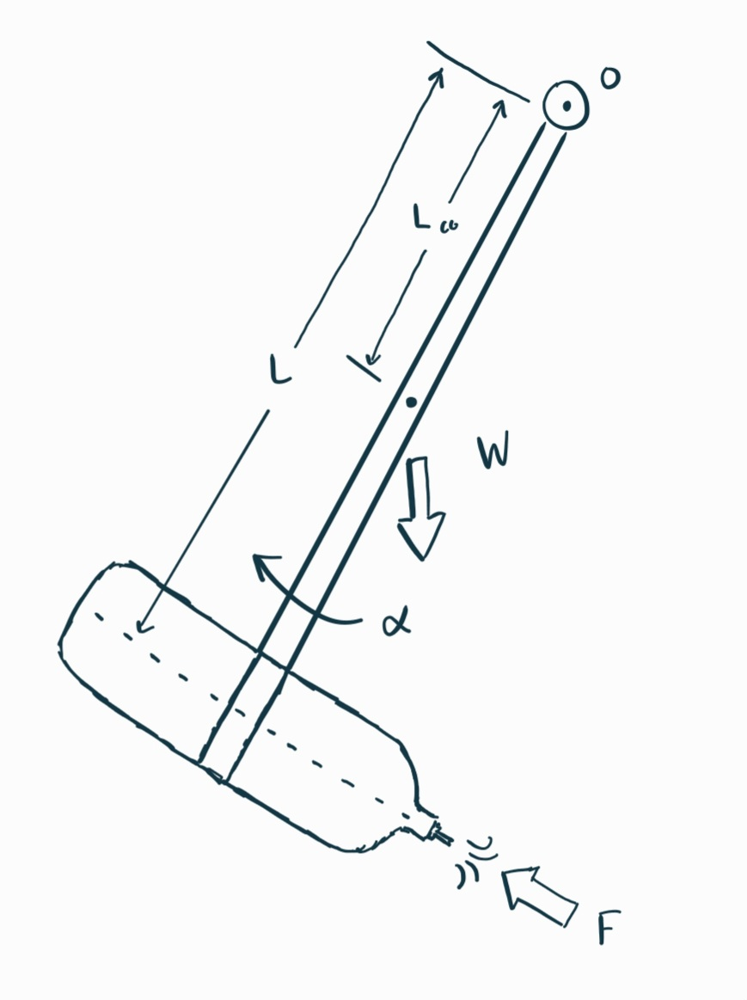

Projects
This is a collection of most projects I've worked on. For a quick, curated overview, please view the Highlights.
SOJO Industries, Summer '26
13 week mobile robotic packaging engineering internship, creating parts put on the packaging lines and fulfilled the duties of a full Mechanical Engineer's position while the site underwent staff transitions.









Torch 5804, FRC '23
World Championship qualifying robotics season, placing within the top 32 of 3,000+ teams.
Torch 5804, FRC '22
World Championship qualifying and Worlds Creativity Award winning season, placing within the top 12 of 3,000+ teams.
Participated in FRC from 2018-2023, Captain in 2022.
Highlights
These are selected highlights of the things I've worked on, based on how interesting I think they are. For a comprehensive collection, see Projects.
FSAE Uprights
Through hundreds of pages of research, and hundreds of hours of modeling and simulation, created a set of front and rear uprights for my university FSAE team spec'd to a Safety Factor greater than 3 without prior physical testing to pull from.
View Details
Choked Flow Impulse
Created a theoretical model with a maximum error of 15% when compared experimental data for the impulse imparted by a pressurized vessel at varying pressures releasing to atmosphere.
View Details
Let's Connect
Connect with me on via email,
or through my LinkedIn.
Formula Student Uprights
A collection of documentation for the creation of an FSAE car's front and rear uprights.
This page is intended to both chronicle the experience I gained throughout this design process and also serve as a resource for future team members who take on this task.
Project Sources & References
The initial and most important part of this design process was the research phase. I primarily stuck to FSAE related documentation for the creation of a load case, as well as reviewing the documents of my team's previous years to build my understanding. In total, somewhere between 500-700 pages of reading was involved in this step, and what I have listed here is what I found most useful of what I read.
I also spent time reviewing and understanding the role of an upright in the context of a car's suspension system, as well as the manufacturing constraints of the project before I jumped in.
| Abbreviated Title | Link |
|---|---|
| VT Master's Thesis: Design & Optimization of an FSAE Upright | Access |
| IOP Research: Design & Optimization of an FSAE Upright | Access |
| JCU Research: On the Design of Rear Uprights for a Race Car | Access |
| Politecnico Di Torino: Design of the Upright Assembly of a Formula Student Prototype | Access |
Load Case and Blocking Out
The next step in this project was the creation of several load cases. I put together a rudimentary script to find the theoretical loads on the upright when braking while cornering, which is expected to place the part under the greatest stress. The output of this script could've been used, however another load case was developed using a lap simulation another team member constructed. The most conservative numbers were used and it was decided a safety factor minimum of near 3 would be targetted. This ensures that even if our load case is somehow greater than our greatest prediction, the part should still be relatively safe.


Block Design
Getting into the real CAD of the upright first focuses on blocking out the rough shape, with inspiration from past years, while fulfilling some of the desired features. Each outboard point must have a specific width that aligns with the uniball cup so the A arms can be connected. Additionally, it is desirable for the top outboard point to be both attached by an adjustable bracket, so that the camber can be adjusted, and also be aligned so the bolt attachment is parallel to the plane of the A-arm. This allows the uniball cup to have a more evenly distributed load and range of motion.
Adjustable Ackermann Brackets
The most unique of the desired features is the ability to adjust the ackermann angle by using alternative attachment brackets for the tie rod. Two designs were considered, one using a key and slot method to align the bracket and prevent it from unseating, and another using two plates that fit into slots on the top and bottom of an attachment point that branches off the upright's main body. The key and slot method was preferred because the motion of the tie rod places the bolt in tension rather than shear.


Finite Element Analysis
With a load case finalized and having drawn an initial design, a simulation was created applying a remote force to the outboard attachment points, fixing the body at the wheel's bearing interfaces, and continually running, tweaking, and adding material until a reasonable safety factor was obtained. Following 100+ iterations of this process, the design was refined into a form similar to the one in the model viewer above.


Manufacturability & Final Notes
The design was continuously monitored to ensure it could be manufactured using a 5-axis CNC mill, generally keeping to a .3" minimum fillet radius to ensure a 0.5" ball end mill could be used, and design decisions were made in order to reduce the number of operations required to machine the part by sacrificing weight savings to keep some surfaces planar. The final safety factor fell somewhere around 2.9, which was determined to be enough that the part isn't expected to fail. Based on the fatigue life of aluminum 6061-T6 (page 14, R = -1 is most conservative) and assuming our load case is in the right ballpark, the lifetime would be somewhere between 100,000 and 1,000,000 cycles of the absolute worst case loading condition the upright is expected to ever face.
Choked Flow Impulse Prediction
This is a general walkthrough of the process for deriving and conducting an experiment to predict the impulse imparted by a pressurized vessel as it discharges to atmospheric pressure. This lab was created and conducted by a team of three people that included myself, and my role included creating the larger idea, locating relevant documents, deriving the math into a form we could use for our theoretical model, and creating a graphical theoretical model we could easily adjust.
Basic Model
The basis of the experiment is a pressurized vessel attached to a pendulum as seen in the image. There is an encoder attached to the rotation point, and the physical properties of the system (mass, volume, pressure) are defined or measurable.
The idea was to take the experiment a step beyond predicting the force of the release by instead predicting the impulse, which would require further assumptions and more complicated calculations.
The major assumption made for this is that a choked flow regime is both satisfied, and also is responsible for the majority of the impulse enacted on the system.

Choked Flow Regime
Choked flow occurs when a vessel's interior pressure is significantly greater than that of the pressure downstream, surpassing a critical pressure ratio. When the vessel pressure exceeds this critical amount, the flow velocity is approximated as holding constant at the speed of sound for the fluid.
For example, if the upstream pressure is 14.7 psi (1 atm), vessel pressure is 85 psi, and the fluid is dry air at 20°C, then the heat capacity ratio is 1.4, the critical pressure ratio is 1.893, and the flow velocity is roughly the speed of sound while discharging from 85 psi to 27.8 psi. Our additional assumption beyond Choked Flow applying was that the air released following choked flow would not be significant.
The Math
This is the original workings I used when developing the theoretical model. It is largely based off a paper by Dean Wheeler from BYU that I'd found, but their approach targeted a relationship between the pressure and temperature in the tank relative to a time constant.
The goal of our math was to determine an impulse by integrating the standard thrust equation, so somewhere near eqn 9 we deviate.
First, the Ideal Gas Law:
'$$PV = nRT; \quad \frac{P}{RT} = \frac{n}{V} \tag{1}$$'By substituting '$\rho = \frac{nM}{V}$', where M is the molecular weight of air, ~0.02896 kg/mol, the following is derived:
'$$\rho = \frac{PM}{RT} \tag{2}$$'Next, thermodynamic relationships for pressure and temperature in a reversible adiabatic expansion of a constant-heat-capacity ideal gas are referenced:
'$$P = P_0\left(\frac{\rho}{\rho_0}\right)^{\gamma} \tag{3}$$' '$$T = T_0\left(\frac{\rho}{\rho_0}\right)^{\gamma-1} \tag{4}$$'“0” subscript indicates initial, known pressures, temperatures, and density of the gas.
Application of the above equations to tank conditions:
'$$P_* = P_{tank}\left(\frac{\rho_*}{\rho_{tank}}\right)^{\gamma} \tag{5}$$' '$$T_* = T_{tank}\left(\frac{\rho_*}{\rho_{tank}}\right)^{\gamma-1} \tag{6}$$''$$\gamma = 1.4$$' is used for air; the goal here is to link the pressure and temperature of the tank over time to the density of gas in the tank.
To find the density of the gas in the tank as it releases, we need to approximate it under the conditions of choked flow, which are met when '$P_{\text{tank}} \ge P_{\text{atm}} \left( \frac{\gamma + 1}{2} \right)^{\frac{\gamma}{\gamma - 1}}$'. Again, this is the region we actually care about, as when the flow isn’t choked the pressure is low enough that its impulse can be assumed negligible. Under choked flow,the velocity of the gas at the nozzle is exactly the speed of sound, or 343 m/s. Applying this gives the following:
'$$\frac{\rho_*}{\rho_{tank}} = \left(\frac{2}{\gamma+1}\right)^{\frac{1}{\gamma-1}} \tag{7}$$'This equation can be substituted in several places. Ideal gases only depend on temperature for the speed of sound, in the following equation that replaced elements of '$T_{\text{*}}$' with the density equation.
'$$v_* = c_* = \left(\frac{2\gamma}{\gamma+1}\cdot\frac{RT_{tank}}{M}\right)^{\frac{1}{2}} \tag{8}$$'With the effective velocity now found, the mass flow rate can be calculated, where '$d_*$' is nozzle diameter. '$C_d$' is the “discharge coefficient”, and depends on how the nozzle transitions from the tank’s surface to the nozzle, and how it releases into the air, i.e. sharp corners vs. filleted edges. Generally, we can assume it’s likely ~0.82, though it could range from 0.60 to 0.98.
'$$\frac{dm}{dt} = C_d A_* \rho_* v_*, \qquad A_* = \frac{\pi}{4}d_*^2 \tag{9}$$'Applying all of the previously found equations,
'$$\frac{dm}{dt} = C_d A_* \rho_{tank}\left(\frac{2}{\gamma+1}\right)^{\frac{1}{\gamma-1}}\left(\frac{2\gamma}{\gamma+1}\cdot\frac{RT_{tank}}{M}\right)^{\frac{1}{2}} = C_d A_* \rho_{tank}\left(\gamma\frac{RT_{tank}}{M}\right)^{\frac{1}{2}}\left(\frac{2}{\gamma+1}\right)^{\frac{\gamma+1}{2(\gamma-1)}} \tag{10}$$'The thrust equation is as follows
'$$F(t) = \frac{dm}{dt}v_*(t) + \left[P_*(t) - P_{atm}\right]A_* \tag{11}$$'The literature used as reference for the equations above suggests either an adiabatic or isothermal assumption. Choosing adiabatic leads to the following:
'$$\frac{dm}{dt}v_*(t) = C_d A_* P_{tank}(t)\left[\gamma\left(\frac{2}{\gamma+1}\right)^{\frac{\gamma}{\gamma-1}}\right] \tag{12}$$'Factoring out '$P_{\text{tank}}(t) \left[ \gamma \left( \frac{2}{\gamma + 1} \right)^{\frac{\gamma}{\gamma - 1}} \right]$' from both the definition of '$P_*$' and mass flow rate/velocity:
'$$F(t) = A_*\left(P_{tank}(t)\left[\left(\frac{2}{\gamma+1}\right)^{\frac{\gamma}{\gamma-1}}\right](\gamma C_d + 1) - P_{atm}\right) \tag{13}$$'Where '$P_{\text{tank}}(t)$' is:
'$$P_{tank}(t) = P_0\left[1 + \left(\frac{\gamma-1}{2}\right)\frac{t}{\tau}\right]^{\frac{2\gamma}{1-\gamma}} \tag{14}$$'and '$\tau$' is defined as:
'$$\tau = \frac{V_{tank}}{C_d A_* c_0}\left(\frac{\gamma+1}{2}\right)^{\frac{\gamma+1}{2(\gamma-1)}} \tag{15}$$'Where '$c_0$' is the speed of sound for air, ~346 m/s at 298K. Finally, the impulse can be calculated.
'$$I = A_*\int_0^t\left(P_0\left[1+\left(\frac{\gamma-1}{2}\right)\frac{t}{\tau}\right]^{\frac{2\gamma}{1-\gamma}}\left[\left(\frac{2}{\gamma+1}\right)^{\frac{\gamma}{\gamma-1}}\right](\gamma C_d+1) - P_{atm}\right)dt \tag{16}$$'For Air:
'$$I = A_*\int_0^t\left(P_0\left[1+\frac{0.2t}{\tau}\right]^{-7}\left[\frac{5}{6}\right]^{3.5}(2.148) - 101325\ \text{Pa}\right)dt$$'This equation is translatable into a plotting tool like MATLAB or Desmos where we can compare variables quickly.
This model makes two major assumptions: the choked flow's imparted impulse is so much greater than when the chamber isn't choked that it can be ignored, and the process of pressure releasing is adiabatic and not isothermal. To change the model, T would be set constant and '$P_{\text{tank}} = P_0e^{-t/\tau}$', trickling down such that '$I = \int_{0}^{t} A_e \left( P_0 e^{-\frac{t}{\tau}} \left[ \left(\frac{2}{\gamma+1}\right)^{\frac{\gamma}{\gamma-1}} \right] (\gamma C_d + 1) - P_{\text{atm}} \right) dt$'. This was included at the bottom of the Desmos script linked above. If the other consideration is proven false by our data, our intent was to try formulating an additional model for unchoked flow afterwards in our revisions, which was proven unnecessary.
Project Alpha: Deep Dive
A comprehensive look at the engineering and design process.
Electric Bicycle
A comprehensive look at the engineering and design process.
Electric Bicycle
A comprehensive look at the engineering and design process.
Electric Bicycle
A comprehensive look at the engineering and design process.
Electric Bicycle
A comprehensive look at the engineering and design process.
Electric Bicycle
A comprehensive look at the engineering and design process.
Electric Bicycle
A comprehensive look at the engineering and design process.
Electric Bicycle
A comprehensive look at the engineering and design process.
Electric Bicycle
A comprehensive look at the engineering and design process.
DevBlocks Storage
Copy and paste blocks from here into your active pages.
Title Left
Description...
Project Title
A brief summary of the intensive project. This block acts as a portal to the full case study section.
View Case Study →


Detailed Gallery
This carousel allows users to swipe through multiple project views. It is purely for display and does not redirect the page.
View Details
3D Concept
Click and drag to rotate the model. Scroll to zoom.
Simple Text Block
Sometimes you just need a paragraph of text centered in the middle of the screen without any images.


The Prototype
Here is a fully interactive 3D render of the concept. You can rotate, zoom, and pan around the object to see the details.
Architectural View
This model demonstrates the spatial relationship between the core structure and the surrounding environment.
Download AssetsProject Sources & References
The initial and most important part of this design process was the research phase. I primarily stuck to FSAE related documentation for the creation of a load case, as well as reviewing the documents of my team's previous years to build my understanding. In total, somewhere between 500-700 pages of reading was involved in this step, and what I have listed here is what I found most useful of what I read.
I also spent time reviewing and understanding the role of an upright in the context of a car's suspension system, as well as the manufacturing constraints of the project before I jumped in.
| Abbreviated Title | Link |
|---|---|
| VT Master's Thesis: Design & Optimization of an FSAE Upright | Access |
| IOP Research: Design & Optimization of an FSAE Upright | Access |
| JCU Research: On the Design of Rear Uprights for a Race Car | Access |
| Politecnico Di Torino: Design of the Upright Assembly of a Formula Student Prototype | Access |
Show full derivation & equations
'$$PV = nRT; \quad \frac{P}{RT} = \frac{n}{V} \tag{1}$$'
Bill of Materials
Some regular text, a list, a table, whatever you want.